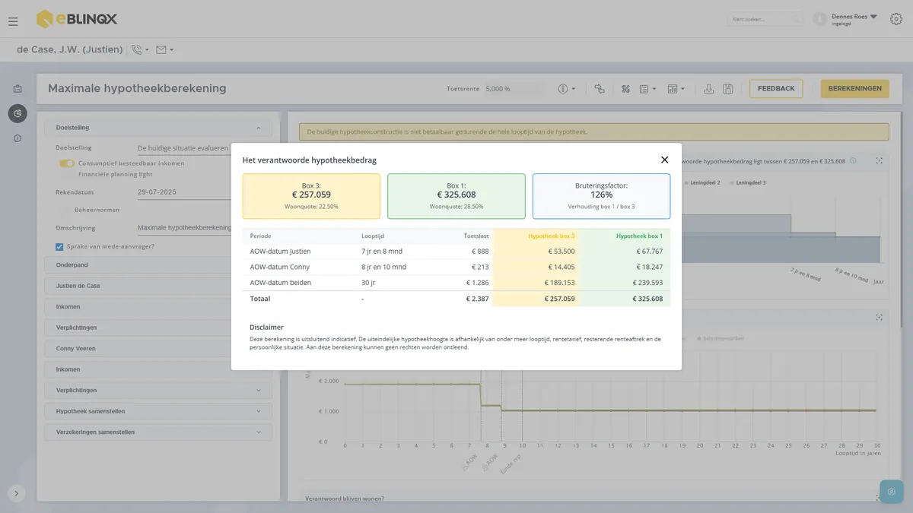
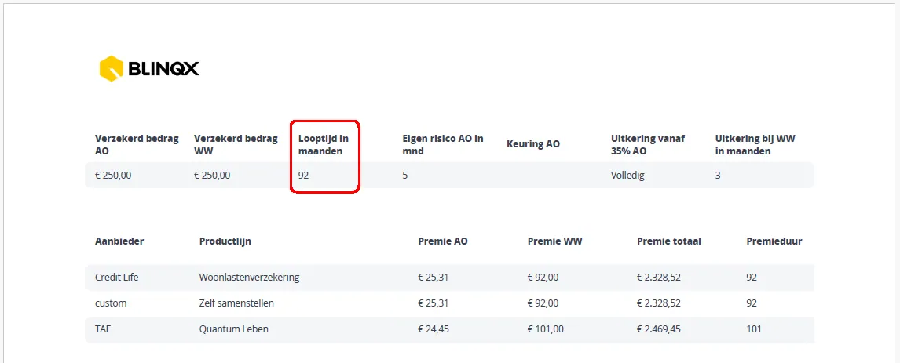
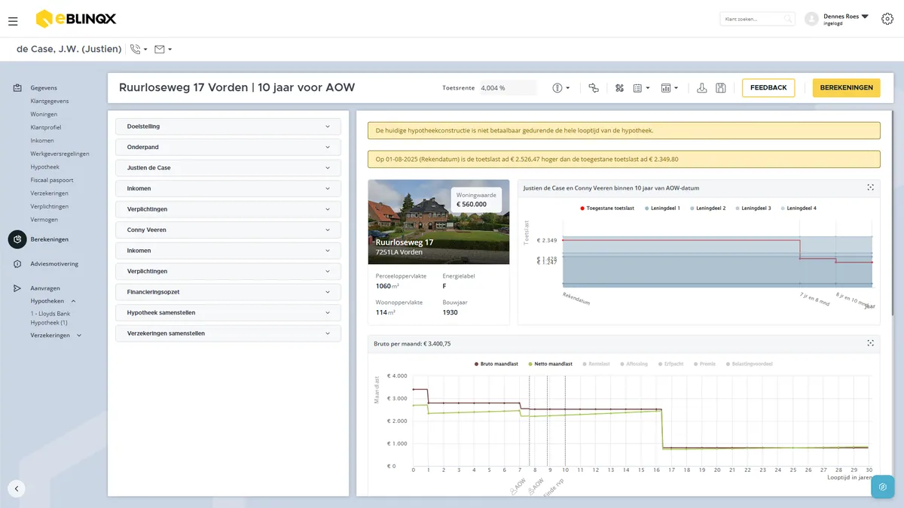
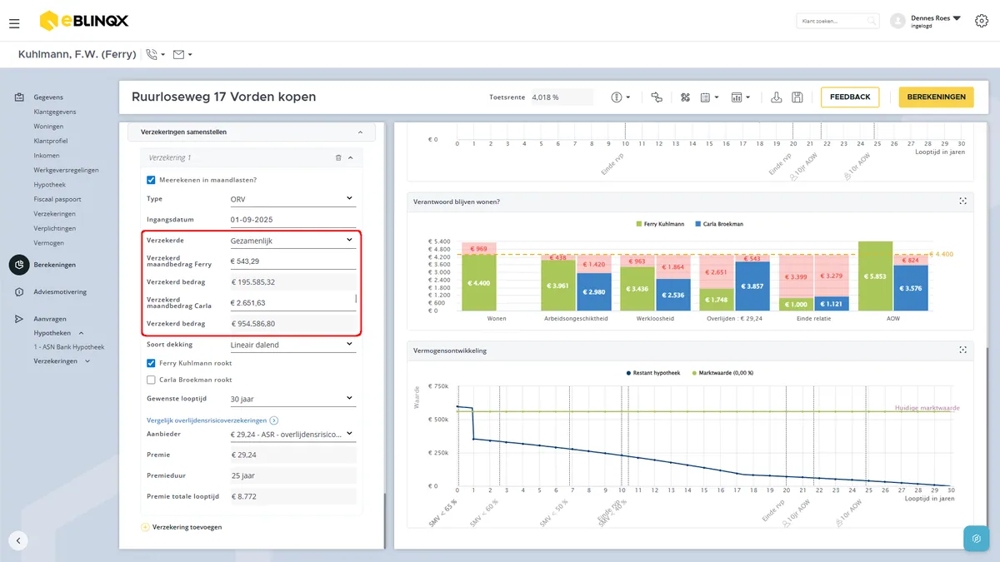
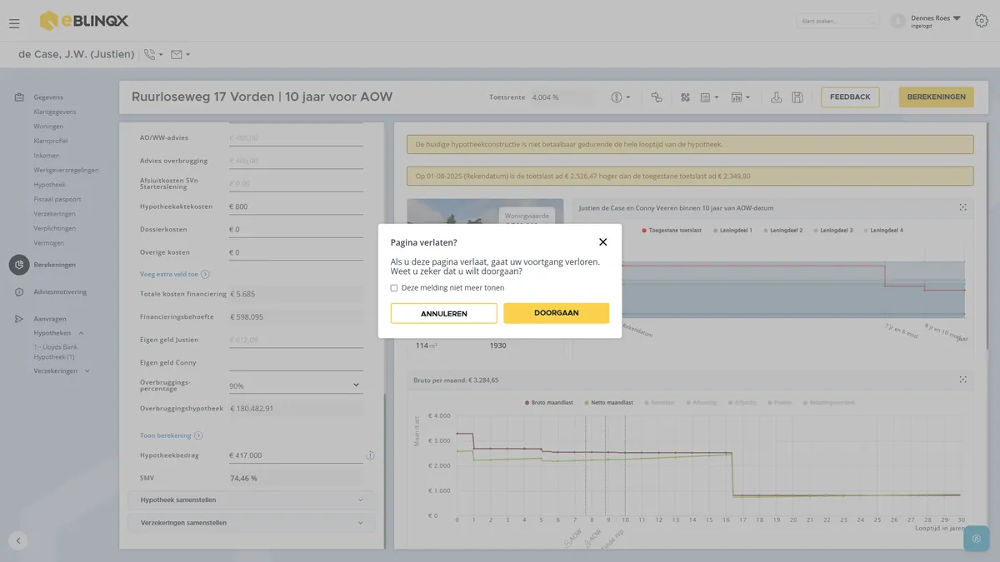
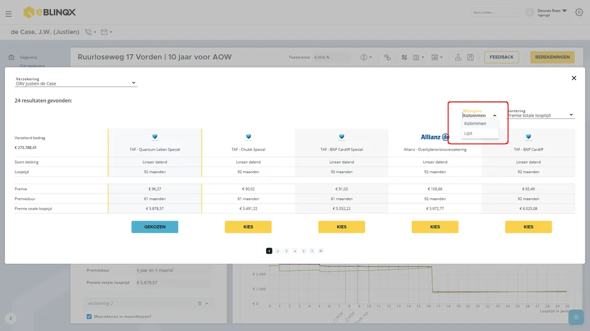
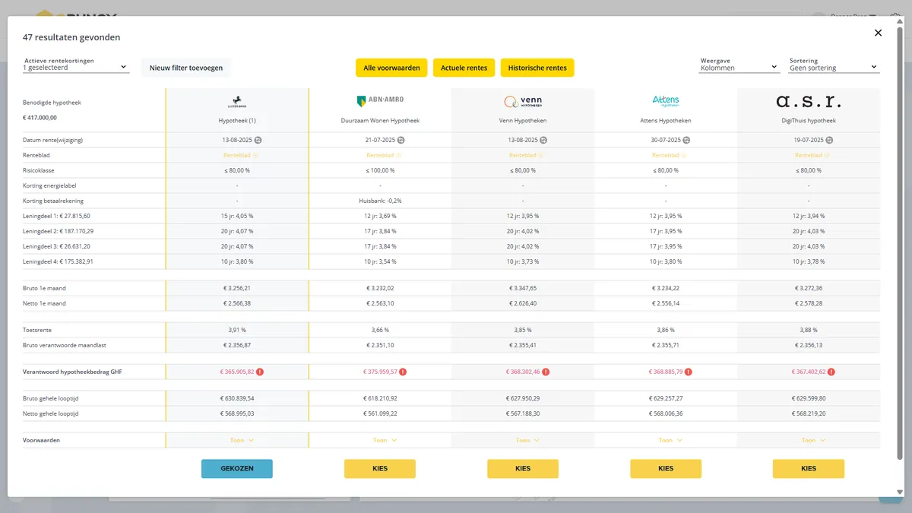
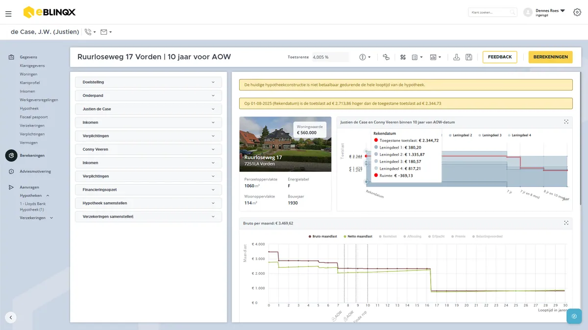
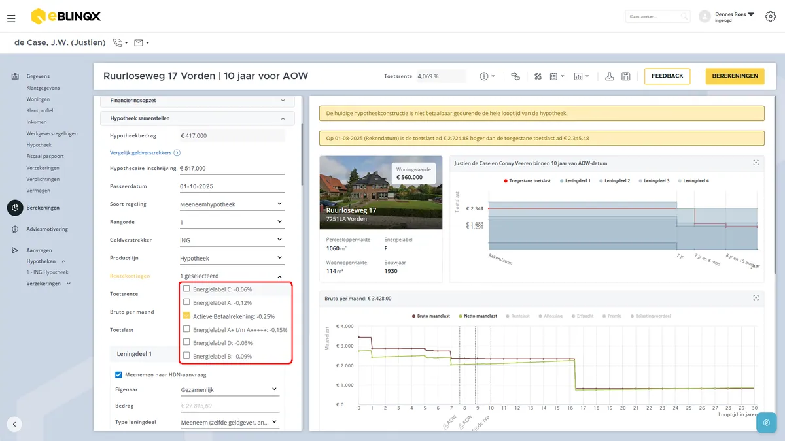
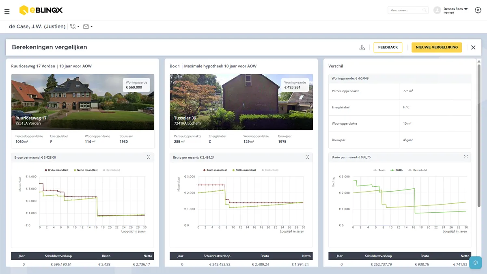

Releasenotes eBlinqx Hypotheekadvies – Augustus 2025
Onderstaande updates hebben wij in de maand augustus doorgevoerd:

Met deze release tilt eBlinqx Hypotheekadvies de 10-jaar-voor-AOW functionaliteit naar een hoger niveau. Vanaf nu zie je bij klanten die binnen 10 jaar voor hun AOW-datum zitten in één oogopslag de Indicatieve hypotheekhoogte in zowel Box 3 als Box 1.
✅ De voordelen voor jou als adviseur
-
Direct inzicht in de bandbreedte van de verantwoorde hypotheekhoogte van jouw klant richting AOW, berekend op basis van jouw ingestelde gewogen gemiddelde toetsrente.
-
Ondergrens (Box 3): wanneer de resterende hypotheekrenteaftrek korter is dan 10 jaar.
-
Bovengrens (Box 1): wanneer de renteaftrek van alle leningdelen nog 10 jaar of langer loopt.
👉 Altijd verantwoord adviseren
De (gebruteerde) toetslast moet passend zijn tijdens de drie momenten:
- Rekendatum,
- AOW-datum oudste en
- AOW-datum jongste.
Zo blijf jij gedurende de gehele looptijd van de hypotheek ‘binnen de lijntjes kleuren’.
ℹ️ Belangrijk om te weten
De berekening is indicatief. De daadwerkelijke hypotheekhoogte blijft afhankelijk van factoren als looptijd, rentetarief, resterende renteaftrek en de persoonlijke situatie van je klant.
🎯 Wat betekent dit voor jouw adviespraktijk?
Met deze uitbreiding kun jij klanten in de laatste fase voor hun pensioen nog preciezer én verantwoord begeleiden in het samenstellen van de meest passende hypotheekconstructie.
👉 Kortom: meer inzicht, meer vertrouwen, betere adviezen!

👉 IT-27453: Correcte weergave looptijd woonlastenverzekering in rapport
In het adviesrapport wordt bij de vergelijking van woonlastenverzekeringen de looptijd nu correct in maanden weergegeven. Zo zie je voortaan bijvoorbeeld netjes 92 maanden waardoor de informatie in de bijlage “Vergelijk verzekeringen → Kenmerken Woonlastenverzekeringen” nog duidelijker en overzichtelijker is. Dit zorgt voor een professionele presentatie richting jouw klant en voorkomt verwarring.

👉 IT-27531 – Verbetering bij het inladen van een bestaande berekening
Vanaf nu verloopt het inladen van een bestaande berekening nóg soepeler. Waar eerder soms tijdelijk rode bolletjes zichtbaar waren en de gegevens aan de rechterkant niet direct werden getoond, worden deze nu automatisch correct geladen. Je hoeft dus geen handmatige aanpassing meer te doen. eBlinqx Hypotheekadvies zorgt er voortaan zelf voor dat de juiste informatie direct zichtbaar is. Hiermee bespaar je tijd en verloopt het werken met bestaande berekeningen een stuk efficiënter en foutloos.

🎉IT-23263: ORV op twee levens bij adviseren op basis van CBI
Vanaf nu kun je in Fastlane Advies bij het adviseren op basis van Consumptief Besteedbaar Inkomen (CBI) ook kiezen voor een overlijdensrisicoverzekering (ORV) op twee levens. De standaardinstelling blijft dat er per verzekerde één polis wordt gefaciliteerd. Maar… als jij kiest voor ‘Verzekerde = Beiden’, dan worden de verzekerde bedragen van zowel de aanvrager als de mede-aanvrager automatisch netjes geprefilled in het juiste vakje. Zo bespaar je tijd en voorkom je fouten bij het invoeren. Met deze uitbreiding sluit eBlinqx Hypotheekadvies nog beter aan op jouw adviespraktijk en wordt het nóg makkelijker om snel en compleet advies te geven.

🔔 IT-26970: Nieuw in eBlinqx Hypotheekadvies – Voorkomen van verlies bij weg navigeren zonder opslaan
Vanaf nu helpt eBlinqx Hypotheekadvies je om geen berekeningen meer kwijt te raken wanneer je per ongeluk de pagina verlaat zonder eerst op te slaan:
-
Zodra je wijzigingen hebt gemaakt in een berekening en de pagina wilt verlaten zonder op te slaan, verschijnt er een melding.
-
In deze melding staat duidelijk aangegeven dat niet-opgeslagen werk verloren gaat.
-
Je kunt er dan voor kiezen om terug te keren en alsnog op te slaan, of om de pagina toch te verlaten.
Wat levert dit op?
✅ Geen frustratie meer door verloren werk.
✅ Meer betrouwbaarheid en gebruiksgemak in eBlinqx Hypotheekadvies.

🔔 IT-26800: Verbeterde weergave van aanbieders bij verzekeringen
Bij het vergelijken van verzekeraars in eBlinqx Hypotheekadvies is de weergave vernieuwd om duidelijker en gebruiksvriendelijker te zijn. Wat is er aangepast? De weergave-opties heten voortaan:
- Kolommen (voorheen ‘Lijst’)
- Lijst (voorheen ‘Tabel’)
Hiermee sluiten de namen beter aan bij de daadwerkelijke presentatie van de informatie. Je kiest de gewenste weergave nu eenvoudig via een dropdownmenu, vergelijkbaar met hoe dit al werkt bij het vergelijken van geldverstrekkers.
Wat levert dit op?
✅ Eenduidige en logische benaming van weergaves.
✅ Een herkenbare en consistente manier van werken in eBlinqx Hypotheekadvies.
✅ Sneller schakelen tussen overzichtelijke kolommen of een compacte lijst.

🔔 IT-27452: Extra knoppen bij Geldverstrekkers vergelijken
Om het vergelijken van geldverstrekkers overzichtelijker en sneller te maken, hebben we drie nieuwe knoppen toegevoegd aan het onderdeel Geldverstrekkers vergelijken. Bovenaan de pagina vind je nu de volgende knoppen:
👉 Deze pagina’s openen automatisch in een apart tabblad, zodat je jouw vergelijking niet kwijtraakt..
Wat levert dit op?
✅ Directe toegang tot actuele en historische rentetarieven.
✅ Snelle inzage in alle hypotheekvoorwaarden.
✅ Een efficiëntere en gebruiksvriendelijkere manier van werken.

🔔 IT-27384: Grafiek 10 jaar AOW sluit naadloos aan op looptijden leningdelen
De grafiek 10 jaar AOW is uitgebreid met een nieuwe functionaliteit die de looptijden van leningdelen nog nauwkeuriger weergeeft.
-
Wat is er nieuw?Leningdelen bewegen nu volledig mee met hun daadwerkelijke looptijd.
-
Zodra een leningdeel afloopt, wordt dit direct zichtbaar doordat de lijn in de grafiek stopt.
Wat levert dit op?
✅ Een nog realistischer en betrouwbaarder overzicht in de grafiek 10 jaar AOW.
✅ Betere aansluiting tussen berekening en visuele weergave.
✅ Meer duidelijkheid richting je klant tijdens het adviesgesprek.

🔔 IT-25542: Betaalrekeningkorting blijft nu correct ingesteld
We hebben Fastlane Advies uitgebreid met een handige verbetering rondom de betaalrekeningkorting. Wat is er nieuw?
-
Wanneer je de betaalrekeningkorting aan- of uitvinkt, blijft jouw keuze nu correct opgeslagen.
-
Ook na het sluiten en opnieuw openen van een dossier blijft de instelling precies staan zoals jij deze hebt vastgelegd.
Wat levert dit op?
✅ Volledige controle over het al dan niet toepassen van de korting.
✅ Een betrouwbaar en consistent adviesdossier.
✅ Geen herhalend invulwerk meer – jouw keuze blijft behouden.

🔔 IT-27389: Nieuwe titel in adviesrapport 'Berekeningen vergelijken'
Om het adviesrapport nog duidelijker te maken, hebben we de titel ‘Vergelijking berekening’ aangepast naar ‘Berekeningen vergelijken’. Wat levert dit op?
✅ Een meer herkenbare en logische titel in het adviesrapport.
✅ Beter aansluitend bij de inhoud van de rapportage.
✅ Duidelijker voor zowel adviseur als klant.